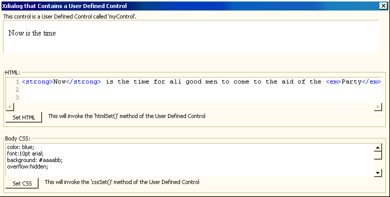

Creating a User Defined Control
This script shows how to create user-defined controls (based on ActivX controls) that can be used on an Xdialog. The control will be called myControl. Once the control has been defined, it can be placed on the Xdialog using the syntax {myControl=width,heightInstanceVariable} e.g. {myControl=100,20p} where p is a dot variable that defines and instance of the myControl User Defined Control. In this example, we will create a User Defined Control called myControl. This control will have two methods, setHTML()and setCSS().

This will be a User Defined Control that will use the shell.explorer ActiveX control to display HTML.
define class system [control] myControl |
Dim a variable as The class (the ::myNameSpace::myInterface class is defined below).
dim iface as ::myNameSpace::myInterface |
When the User Defined Control is loaded, Xdialog automatically calls the following methods of the control (.i.e think of these as the control's "constructor"):
.initialize()
.getActiveXName()
.bindActiveX()
When the User Defined Control goes away Xdialog automaticaly calls the following method of the control '(i.e. think of these as the control's "destructor"):
.close()
The initialize()function initializes the User Defined Control. It is called automatically when the control is loaded. In this example, the Xdialog command to use the User Defined Control is : {myControl=150,5p} ; .
The arguments of this initialize()function are described below:
pargs is equal to name of the InstanceVariable - in this example, the InstanceVariable's name is p.
pcont is the contents between the beginning and end of the control. This argument is only non-null if the following syntax is used for the User Defined Control:
{Mycontrol=150,20}
the definition for MyControl goes here
{EndMyControl}
If this "in place" definition of the User Defined Control is used then pcont is the text between the opening {Mycontrol} and the closing {EndMyControl}.pframe is the variable frame for the Xdialog. (Note: This is not used anymore and will be dropped in future).
function initialize as v(dlgtitle as c, pargs as c, pcont as c, pframe as p) |
Get a pointer to the InstanceVariable for the User Defined Control (e.g. the p dot variable). self.ptr will just point to the p variable.
self.ptr = ui_dlg_eval(dlgtitle, pargs) |
This is where we bind the methods defined in the ::myNameSpace::myInterface class to this control. After doing this, the p InstanceVariable used in this example has new methods: .htmlSet()and .cssSet().
self.ptr.object = self.iface end function |
Get the name of the ActiveX control you are using. This function is called automatically when the control is loaded.
function [static] GetActiveXName as c ( ) GetActiveXName = "shell.explorer" end function |
Bind the ActiveX control. This function is called automatically when the control is loaded. pActiveX is passed in from GetActiveXName().
function BindActiveX as v (pActiveX as p) self.ActiveX = pActiveX ' keep a local pointer |
Keep a pointer availible to the interface class. This line gives the iface class its own pointer to the ActiveX control.
self.ptr.object.MyControl = self.ActiveX |
Create an html page to load into the ActiveX control.
file.from_string(file.temp_path_get()+"myControl.html","<html><head><title></title></head><body style=\"overflow:hidden;\">Now is the time</body></html>") self.ActiveX.navigate(file.temp_path_get()+"myControl.html") end function |
A function to set the border style.
function GetBorderStyle as c() GetBorderStyle = "default" end function |
A function to clean up.
function close as v () 'this will delete the reference to the ActiveX control delete self.ptr.object file.remove(file.temp_path_get()+"myControl.html") end function |
The end of the class definition.
end class |
Here is where we define the methods of the User Defined Control.
define class ::myNameSpace::myInterface dim MyControl as P |
This function will set the body's html.
function htmlSet as v(htmlStr as c) self.MyControl.document.body.innerHTML = htmlStr end function |
This function will set the body's Cascading Style Sheet.
function cssSet as v(cssStr as c) self.MyControl.document.body.style.cssText = cssStr end function end class |
This particular User Defined Control does have any properties that are set by its InstanceVariable, but we still need to have one, so we create a InstanceVariable with a dummy property.
dim p as p p.dummy = "" dim html as c html = <<%html% <strong>Now</strong> is the time for all good men to come to the aid of the <em>Party</em>. %html% dim bodyCSS as c bodyCSS = <<%css% color: blue; font:10pt arial; background: #aaaabb; overflow:hidden; %css% |
Now display the Xdialog.
ui_dlg_box("Xdialog that Contains a User Defined Control",<<%dlg% This control is a User Defined Control called 'myControl'.; {myControl=150,5p}; {lf}; {lf}; {frame=1,1HTML: } {region} [%A5W%.150,5html]; <Set HTML!htmlSet> This will invoke the 'htmlSet\()' method of the User Defined Control; {endregion}; {lf}; {frame=1,1Body CSS: } {region} [%M%.150,5bodyCSS]; <Set CSS!cssSet> This will invoke the 'cssSet\()' method of the User Defined Control; {endregion} %dlg%,<<%code% if a_dlg_button = "htmlSet" then a_dlg_button = "" 'now call the method of the User Defined Control p.object.htmlSet(html) else if a_dlg_button = "cssSet" then a_dlg_button = "" p.object.cssSet(bodyCSS) end if %code%) |
See Also
and Above
Limitations
Desktop applications only.